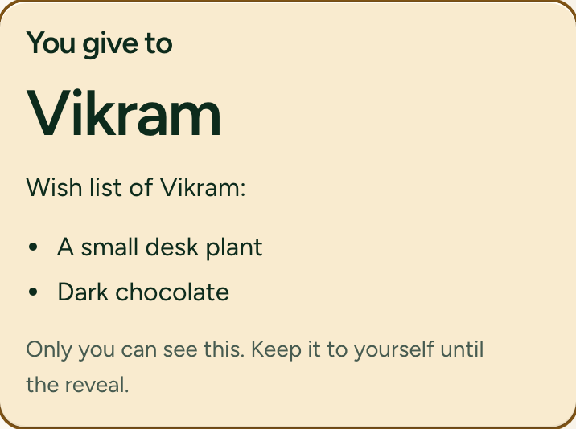
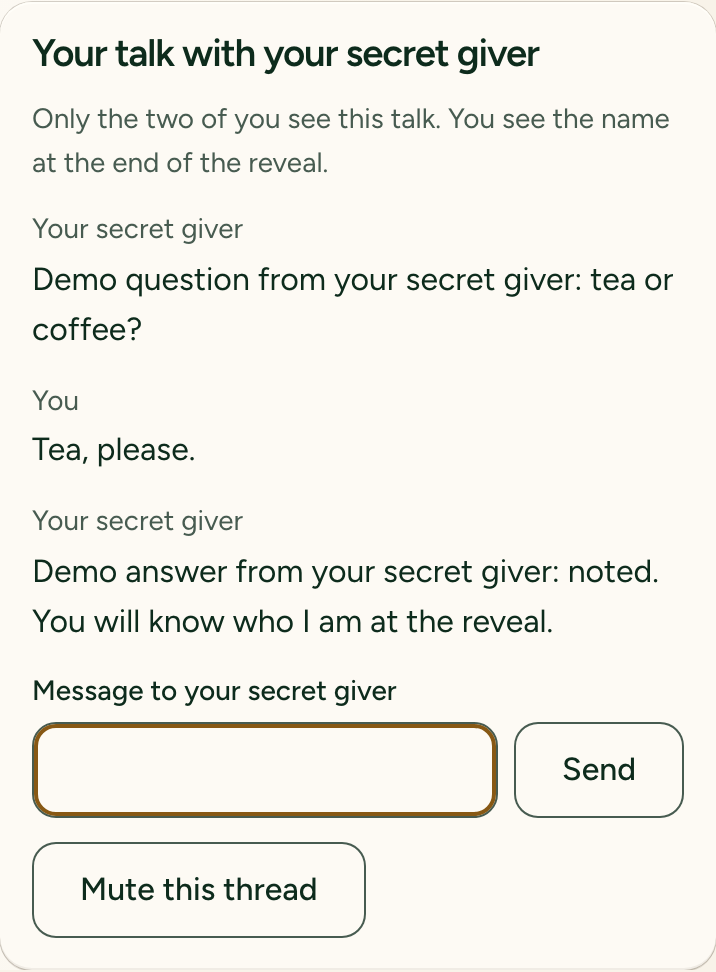
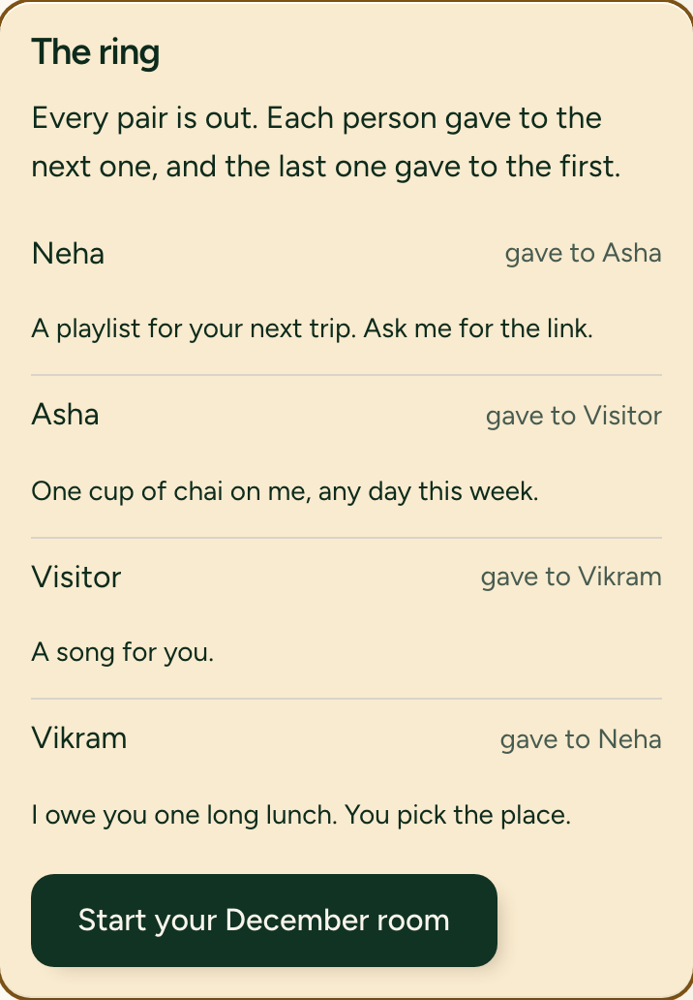

| Event | Nexconn Build Challenge 2026 |
| Live website | https://solstice-black.vercel.app |
| Repository | {{REPO_URL}} |
| Nexconn App Key | {{APP_KEY}} (data center: Singapore) |
| This document | Built {{BUILT_AT}} IST from docs/write-up.html |
Solstice runs a secret gift exchange (a "Secret Santa") for a group of friends, a family or an office team. One person makes a room and shares one link. Nobody makes an account. The website draws the names, lets each giver ask their receiver questions through a mask, and shows the pairs one by one at the reveal, live, on every phone.



From a demo room on a phone screen: the draw card, the mask thread on the receiver's side, and the ring after the reveal.
The name draw is the easy part of a secret gift exchange. The hard part is communication.
Chat apps carry the talk, but they show who writes. Draw websites do the draw, but they have no talk. Solstice puts both in one room, and keeps the giver hidden until the reveal.
Package: @nexconn/chat 26.5.1 (Chat SDK for Web) in the browser, and the Nexconn Platform
Chat API from our server with signed requests. Every row below has a test that ran against the real
Nexconn app (the smoke tests and the room talk browser test).
| Product part | Nexconn feature | Where in the code |
|---|---|---|
| Room talk | Group channel, live messages and message history | Browser: lib/nexconn-client.ts. Server makes the channel and adds the member: lib/room-talk.ts |
| Identity | Access token issue; token expiry when the organizer removes a member | Server: lib/room-talk.ts |
| Live screens | Custom message Solstice:Signal from the server: "load the state again". It carries no room data | Server: lib/signal.ts; browser: lib/nexconn-client.ts |
| Mask talk signal | Targeted custom message: only the other person of the pair gets it, with no text and no sender | Server: lib/signal.ts |
| Draw card in room talk | Targeted custom message Solstice:DrawCard to one giver; the browser accepts it only from the website's own user | Server: lib/signal.ts; browser: lib/nexconn-client.ts |
| Cheers at the reveal | Custom message Solstice:Cheer sent from the browser | Browser: lib/nexconn-client.ts, components/reveal.tsx |
| Kind words in room talk | Profanity filter with the website's word list; the chat service drops a listed word itself | Word list: lib/word-list.ts |
Speed of the reveal. In 5 runs of the room talk test on 21 November, from a computer in India to the Nexconn data center in Singapore, a reveal step showed on another browser 1.25 to 3.3 seconds after the server answer. The middle value was 1.27 seconds. The live server runs in Singapore; its own speed is not measured here.
lib/mask.ts), not in the screen.Counts from the public usage page of the live website (https://solstice-black.vercel.app/usage) at {{USAGE_AT}} IST. Each person who opens a room connects to the Nexconn app, so these people count as active users of the App Key. Our own tests also connect a small number of test users to the same app; the counts below are from the live database only and include no test user.
{{USAGE_TABLE}}| Term | Meaning in this document |
|---|---|
| Giver, receiver | In a pair, the giver gives a gift to the receiver |
| Ring | The draw result: each member gives to the next member in a shuffled order |
| Draw card | The private notice "You give to (name)" |
| Mask talk | A private thread where the giver shows as "Your secret giver" |
| Group channel | A Nexconn chat of many users |
| Targeted message | A group message that only named members receive |
| Custom message | A Nexconn message with our own type and fields |
| Signal | A message that tells a browser to load new state from our server |
| Access token | What a browser needs to connect as one Nexconn user. Our server issues it |
| Active user | A person who connected to the Nexconn app in the month |